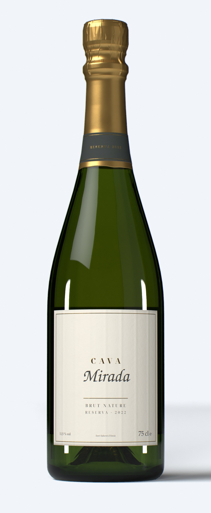

What we inspect on each bottle
We help wineries control the quality of their containers and labels. Our machine vision solutions inspect each bottle in real time and detect defects affecting quality, safety and brand image.

1234Cap and mouth
360° cap inspection: presence, position and integrity of the closure.
Liquid level
Fill-level control for each bottle.
Label
All-round verification of label position, condition and information.
Marking
OCR reading of batch, date and other printed data.